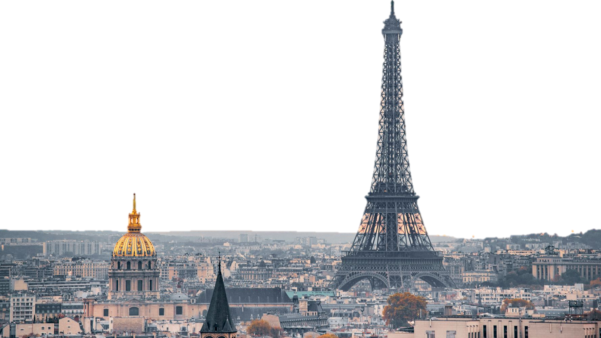
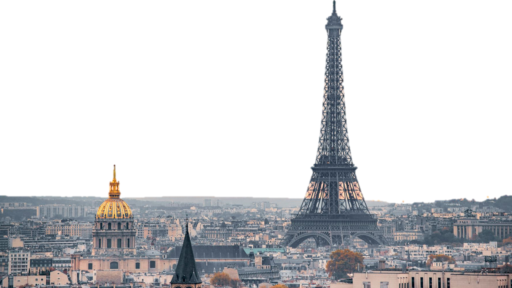
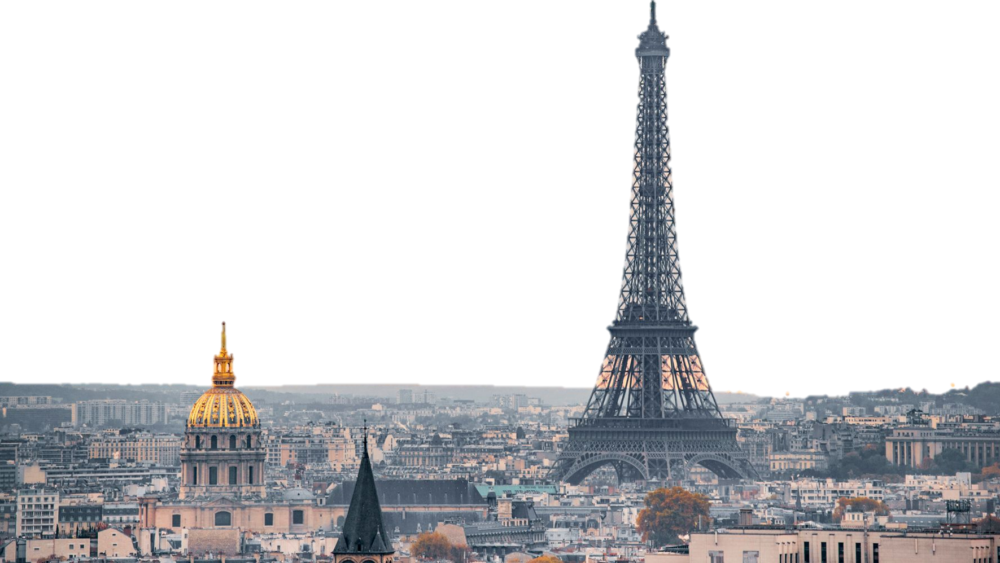
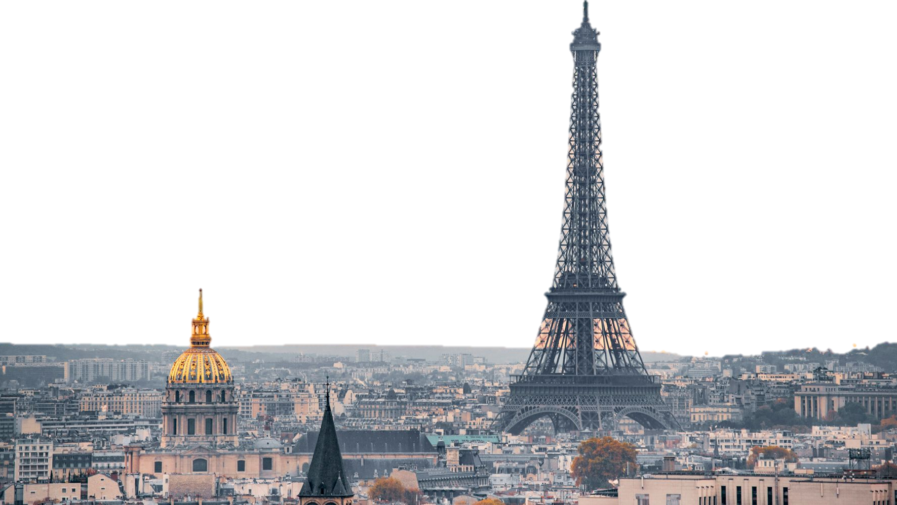

Paris is the capital city of France, situated on the River Seine, in northern France, at the heart of the Île-de-France region ("Région parisienne"). The Paris "aire urbaine" (roughly: "metropolitan area") is one of the most populated areas of its kind in Europe, with a population of roughly 12 million, including 10 million in the Paris urban area, plus the population of the commuter belt surrounding it. Paris has a population of a little over 2 million within city limits.
An important settlement for more than two millennia, its location at a crossroads between land and river trade routes in lands of abundant agriculture had made it one of the principal cities of France by the tenth century, endowed with royal palaces, wealthy abbeys and a cathedral; by the twelfth century Paris had become one of Europe's foremost centers of learning and the arts. During the last nine hundred years Paris was the center of important Western philosophical and political developments: the University of Paris was home to many major medieval philosophers and early scientists; Paris was the site of the French Revolution; and its rich cultural milieu and wealthy patrons provided an intellectual environment in which innovative artists and thinkers flourished. Today Paris is one of the world's leading business and cultural centers, and its influence in politics, education, entertainment, media, business, fashion and the arts all contribute to its status as one of the major global cities. Today, the city serves as an important hub of intercontinental transportation and is home to universities, sport events, opera companies, and museums of international renown, making it the most popular tourist destination in the world with over 30 million foreign visitors per year.
Paris has an oceanic climate and is affected by the North Atlantic Drift, so the city has a temperate climate that rarely sees extremely high or low temperatures. The overall climate throughout the year is mild and moderately wet. Summer days are usually warm and pleasant with average temperatures hovering between 15 and 25 °C (59 and 77 °F), and a fair amount of sunshine. Each year, however, there are a few days where the temperature rises above 32 °C (90 °F). The Paris region has recently seen temperatures reaching both extremes, with the European heat wave of 2003 and the European cold wave of 2006.
Spring and autumn have, on average, mild days and fresh nights but are changing and unstable. Surprisingly warm or cool weather occurs frequently in both seasons. In winter, sunshine is scarce; days are cool, nights cold but generally above freezing with low temperatures around 3 °C (37 °F). Light night frosts are however quite common, but the temperature will dip below −5 °C (23 °F) for only a few days a year. Snow falls every year, but rarely stays on the ground. The city sometimes sees light snow or flurries with or without accumulation.
Architecture
"Modern" Paris is the result of a vast mid-nineteenth-century urban remodelling. For centuries it had been a labyrinth of narrow streets and half-timber houses, but beginning in 1852, the Baron Haussmann's vast urbanization leveled entire quarters to make way for wide avenues lined with neo-classical stone buildings of bourgeoise standing; most of this 'new' Paris is the Paris we see today. These Second Empire plans are in many cases still actual, as the city of Paris imposes the "alignement" law of that time (imposed position defining a predetermined street width) on many new constructions. A building's height was also defined according to the width of the street it lines, and Paris' building code has seen few changes since the mid-nineteenth century to allow for higher constructions. For this reason, Paris is mainly a "flat" city.